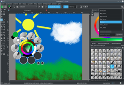
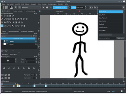

Krita
Dieser Artikel wurde für die folgenden Ubuntu-Versionen getestet:
Ubuntu 16.04 Xenial Xerus
Ubuntu 14.04 Trusty Tahr
Zum Verständnis dieses Artikels sind folgende Seiten hilfreich:
Krita  ist ein freies Mal- bzw. Zeichenprogramm, das ab der Version 3.0 auch zur Animationen von Rastergrafiken verwendet werden kann. Ursprünglich innerhalb der Calligra-Office-Suite entstanden wird es seit der Version 3.0 eigenständig entwickelt.
ist ein freies Mal- bzw. Zeichenprogramm, das ab der Version 3.0 auch zur Animationen von Rastergrafiken verwendet werden kann. Ursprünglich innerhalb der Calligra-Office-Suite entstanden wird es seit der Version 3.0 eigenständig entwickelt.
Krita bietet dem Zeichner viele nützliche Funktionen wie eine breite Pinselpalette und eine Pinselengine, eine einfache und anpassbare Oberfläche oder auch Pinselstabilisatoren, um eine möglichst glatte Linienführung zu ermöglichen. Daneben unterstützt das Zeichenprogramm eine Vielzahl von Grafiktabletts, bietet unterschiedliche Farbräume wie u.a. RGB und CMYK und bis zu 32-bit-Farbtiefe.
Krita zeichnet nicht nur eine einfache Handhabung sondern auch eine offene und eng zusammenarbeitende Nutzer- und Entwicklercommunity und eine sehr gute Dokumentation aus.
Installation¶
Für Krita muss folgendes Paket installiert werden [1]:
krita (universe)
 mit apturl
mit apturl
Paketliste zum Kopieren:
sudo apt-get install krita
sudo aptitude install krita
calligra-l10n-de (universe, deutsches Sprachpaket bis Ubuntu 16.10)
mit apturl
Paketliste zum Kopieren:
sudo apt-get install calligra-l10n-de
sudo aptitude install calligra-l10n-de
krita-l10n (universe, deutsches Sprachpaket seit Ubuntu 17.04)
mit apturl
Paketliste zum Kopieren:
sudo apt-get install krita-l10n
sudo aptitude install krita-l10n
Installation aus dem Snapstore¶
Mittels
snap find krita
lässt sich die im Snapstore vorhandene Krita Version überprüfen. Sollte diese Version neuer sein als die in den Paketquellen, so installiert
snap install krita
das snap-Paket. Anschließend kann Krita wie gewohnt über den Programmstarter aufgerufen werden.
Benutzen des Appimages¶
Hinweis!
Fremdsoftware kann das System gefährden.
Anmerkung: Appimages sollten nur aus vertrauensvoller Quelle heruntergeladen werden, in diesem Fall also möglichst nur von der Krita-Homepage.
Alternativ kann auch die aktuellste Krita-Version als Appimage von der Krita-Homepage bezogen werden. Das heruntergeladene Image muss noch ausführbar gemacht werden. Anschließend kann Krita durch  auf das Appimage gestartet werden. Bei längerfristiger Benutzung ist es sinnvoll, noch einen Programmstarter für Krita anzulegen und das Krita-Dateiformat *.kra mit dem Programmstarter zu verknüpfen.
auf das Appimage gestartet werden. Bei längerfristiger Benutzung ist es sinnvoll, noch einen Programmstarter für Krita anzulegen und das Krita-Dateiformat *.kra mit dem Programmstarter zu verknüpfen.
Programmaufbau und Funktionen¶
Oberfläche¶
|  |
| Krita-Standardoberfläche mit Popup-Palette und geöffnetem Arbeitsbereichdialog. |
Das grundsätzliche Erscheinungsbild der Anwendung kann über "Einstellung -> Design" festgelegt werden. Alle wesentlichen Zeichenfunktionen finden sich in der Werkzeugleiste oder an den Seiten in Tabs angeordneten Dialogfenstern. Standardmäßig aktiviert sind auf der linken Seite der Werkzeugkasten und auf der rechten Seite verschiedene Farbwähler, Ebenen, Pinselvoreinstellung und Werkzeugoptionen.
Der Krita-Arbeitsbereich ist sehr fein konfigurierbar. Alle Dialogfenster können frei positioniert, angedockt, in Tabs angeordnet oder geschlossen werden. Neue Fenster werden über das Menü "Einstellung -> Andockbare Dialoge" aktiviert und auch wieder deaktiviert. Voreingestellte Arbeitsbereiche können über den Dialog in der Werkzeugleiste ganz rechts erreicht werden (s. Bild).
Die Programmoberfläche bietet dem Benutzer zwei Besonderheiten: Mittels  wird die sogenannte Pop-up-Palette am Ort des Mauszeigers aufgerufen. In dieser können häufig verwendete Pinsel und die zuletzt benutzten Farben sehr schnell gewechselt werden. Weiterhin kann Krita über "Ansicht -> Nur Leinwand anzeigen" oder mittels
Tab ⇆ alle Menüs und Dialogfenster ausblenden. Anschließend ist nur noch die Leinwand und der Fensterrahmen sichtbar. Dieser Modus kann durch nochmaliges Drücken von
Tab ⇆ wieder beendet werden.
wird die sogenannte Pop-up-Palette am Ort des Mauszeigers aufgerufen. In dieser können häufig verwendete Pinsel und die zuletzt benutzten Farben sehr schnell gewechselt werden. Weiterhin kann Krita über "Ansicht -> Nur Leinwand anzeigen" oder mittels
Tab ⇆ alle Menüs und Dialogfenster ausblenden. Anschließend ist nur noch die Leinwand und der Fensterrahmen sichtbar. Dieser Modus kann durch nochmaliges Drücken von
Tab ⇆ wieder beendet werden.
Werkzeuge¶
Krita bietet zum Zeichnen und zur Bildmanipulation ein breites Spektrum an bekannten Werkzeugen wie Freihand- und Formenpinsel oder auch Masken. Speziell für das digitale Malen sei hier auf das Assistenzwerkzeug mit dem sich Hilfslinien für Formen oder Perspektivgitter erzeugen lassen sowie auf die Pinselengine verwiesen. Eine detaillierte Dokumentation sowie weitere Anleitungen für den Umgang mit den Werkzeugen und der Pinselengine finden sich in der Dokumentation .
Neben Rastergrafiken können in Krita auch Vektorzeichnungen erstellt werden. Dafür unterscheidet Krita zwischen Mal- und Vektorebenen. Die entsprechenden Werkzeuge wie Text und Bezier-Kurven legen bei Benutzung selbstständig eine Vektorebene an. Auf dieser können die Werkzeuge für Rastergrafik wie z.B. die Pinsel nicht benutzt werden. Entsprechendes gilt für die Vektorwerkzeuge und Malebenen.
Daneben bietet Krita eine vielfältige Auswahl an Filtern u.a. aus der G'MIC-Bibliothek für die weitere Bildgestaltung. Diese finden sich in der Menüzeile unter dem Punkt "Filter".
Import / Export¶
Krita besitzt mit .kra ein eigenes Format, um Zeichnungen und Animationen zu speichern. Für den Austausch mit anderen Programmen kann es eine Vielzahl unterschiedlicher Grafikformate importieren und exportieren, darunter auch Adobe Photoshops .psd-Dateien.
Animation¶
|  |
| Voreingestellte Oberfläche für Animationen mit geöffnetem Arbeitsbereichdialog. |
Seit Version 3.0 können mit Krita Animationen erstellt werden. Dazu bietet es sich an, den für Animation voreingestellten Arbeitsbereich zu benutzen. Dieser bietet die Zeitleiste, in der die einzelnen Frames angezeigt werden, den Animationsdocker, der das Abspielen der Animation oder einzelner Frames ermöglicht und weitere Einstellungen erlaubt, sowie den Onion-Skin-Dialog, in dem die Anzeige der vorhergehenden und nachfolgenden Frames festgelegt wird.
Fertige Animationen können via "Datei -> Render Animation" in übliche Videoformate wie .mp4, .mkv oder .gif exportiert werden.
Ressourcen¶
Krita erlaubt es sehr einfach, Pinsel-, Textursets und ähnliches mit anderen auszutauschen. Eine Übersicht über populäre Sets findet sich auf krita.org. Die heruntergeladenen Bundels müssen entpackt werden und können dann über den Menüpunkt "Einstellungen -> Ressourcen verwalten -> Importiere Bundle" zu den verwendeten Ressourcen hinzugefügt werden.
Problembehebung¶
Krita stürzt nach Aktivieren der OpenGL-Beschleunigung ab¶
Bei manchen Grafiktreibern gibt es Probleme, die Krita zum Absturz bringen können. Da man das Programm hinterher nicht mehr starten kann, um die Einstellung wieder zu ändern, muss man diese in der Datei ~/.kde/share/config/kritarc (ab 16.04 ~/.config/kritarc) ändern [3]. Dort sucht man die folgenden Zeilen:
canvasState=OPENGL_SUCCESS useOpenGL=true useOpenGLShaders=true
und entfernt sie. Nach dem Speichern sollte sich Krita wieder öffnen lassen.
- Erstellt mit Inyoka
-
 2004 – 2017 ubuntuusers.de • Einige Rechte vorbehalten
2004 – 2017 ubuntuusers.de • Einige Rechte vorbehalten
Lizenz • Kontakt • Datenschutz • Impressum • Serverstatus -
Serverhousing gespendet von